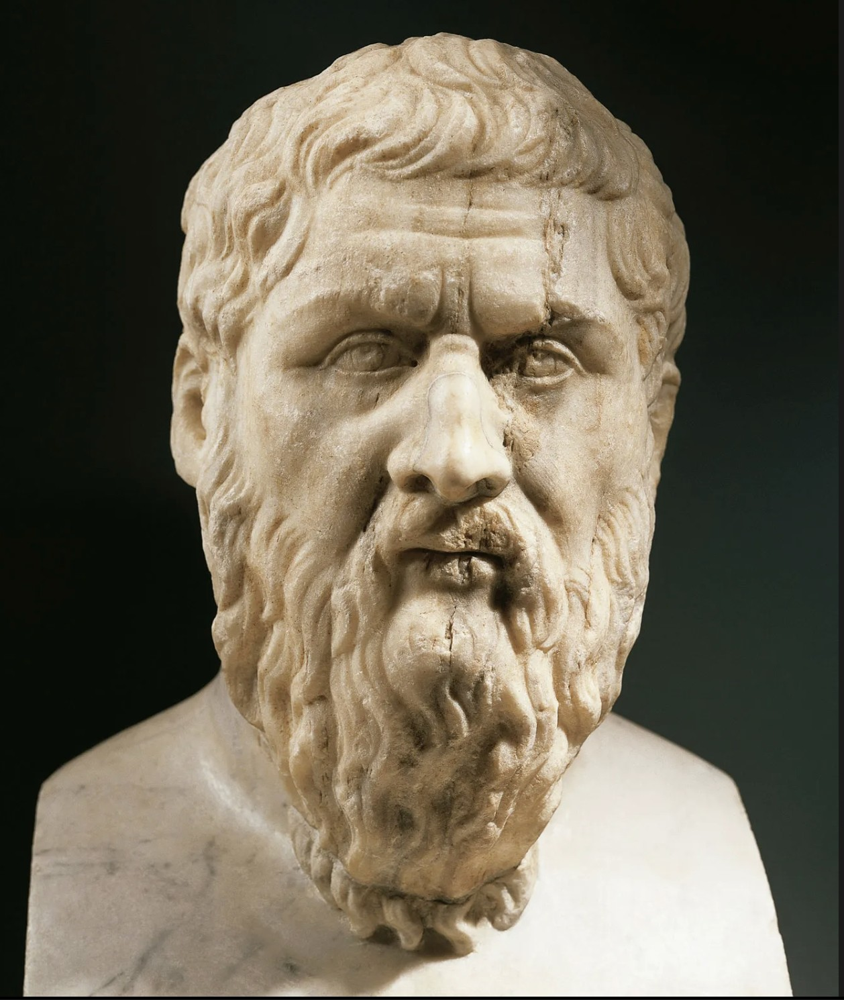
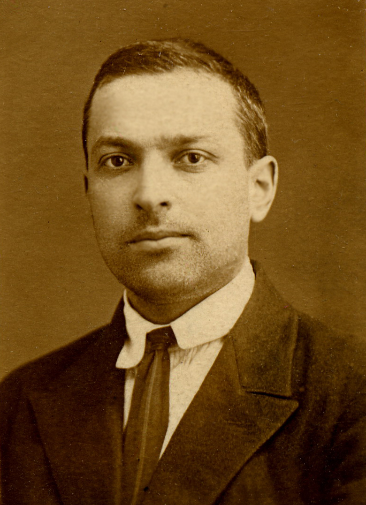

The Complete SEL Timeline
The Whole Child Always Mattered
The roots of Social and Emotional Learning (SEL) are sewn deep into Ancient Greece, written in Plato's ideas about education in The Republic (Edutopa). In his work, Plato touches on a "holistic curriculum that requires balance of training" in all areas, such as physical movement, arts, math, science, character, and moral judgment (Edutopia). Plato was convinced that a thorough and balanced education was how a society would produce "citizens of good character" (Edutopia).

IMAGE CITATION
Foundational Frameworks
Influenced by Plato’s The Republic, Lev Vygotsky emphasized the key role that social interaction plays in the development of cognition. Vygotsky’s work in sociocultural theory suggested that the ways in which people interact with others and the culture they live in shapes their mental abilities (Fresno State University). His work on Zone of Proximal Development was critical in developing the frameworks for social-emotional learning. In this theory, Vygotsky argues that learning should be related to the child’s developmental level and their potential learning ability; this approach relates to more than just academic abilities, but a student’s mental and emotional abilities as well (Positive Action). These foundational thinkers established an approach that would become the core of social-emotional learning guidelines decades later, establishing something essential: academic achievement cannot be separated from emotional and social development.

IMAGE CITATION
Proof of a Concept
Before social-emotional learning was named a discipline, it was used as a proven intervention. In 1968, Dr. James Comer of Yale University’s Child Study Center began piloting what would become the Comer School Development Program in two of New Haven’s most underperforming schools serving predominantly Black student populations (Edutopia). His theory was to support the whole child in order to improve the educational experience of poor ethnic youth. Comer’s program focused on two poor, low-achieving elementary schools in New Haven, Connecticut; both schools had the lowest academic achievement and worst attendance in the city. In the program, the schools established a collaborative-management team consisting of teachers, parents, the principal, and a mental health worker to make decisions together on the schools’ academic and social programs. Their goal was to work together and adjust the ways in which schools were engaging with behavioral problems by better supporting the whole student (CASEL). The results were striking; by the early 1980s both schools had shown significant academic growth, exceeding the national averages. In addition, both schools saw a decline in truancy and behavior problems (CASEL). This change sparked a momentum to the social-emotional learning movement across the nation.
IMAGE CITATION
A Push for More
After seeing profound results from Dr. Comer’s program, the superintendent of the district in which the pilot schools resided called for a focus on social development of students. This birthed the New Haven Social Development Program that pioneered social-emotional learning strategies in K-12 classrooms. Around the same time, educator and researcher Dr. Weissberg and Dr. Elias chaired the Grant Consortium on the School-Based Promotion of Social Competence, bringing leaders together to build a framework for social-emotional learning in schools (CASEL). Finally, in 1989 the term “emotional intelligence” was coined by psychologists Peter Salovey and John D. Mayer, using it to describe the ability to monitor the needs of oneself and others, and use them to guide behaviors (CASEL).
IMAGE CITATION